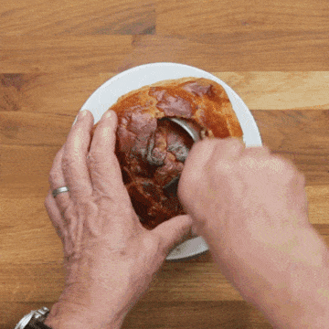

Chicken Pot Pie

This page is to describe how to make a banging Chicken pot Pie that
serves up to 8 people. The total cook time is 1 hour and 10 minutes
with a prep time of 20 minutes, and a cook time of 50 minutes. Each serving
is 412 calories; protein 18.4g; carbohydrates 30.4g; fat 23.9g; cholesterol 54.9mg; sodium 517mg.
Ingredients:
- 1 lb Skinless, Boneless Chicken Breasts Halves (Cubed)
- 1 Cup Sliced Carrots
- 1 Cup Frozen Peas
- 0.5 Cup Sliced Celery
- 0.33 Cup Butter
- 0.33 Cup Chopped Onion
- 0.33 Cup All-Purpose Flour
- 0.5 Teaspoon Salt
- 0.25 Teaspoon Black Pepper
- 0.25 Teaspoon Celery Seed
- 1.75 Cups Chicken Broth
- 0.66 Cup Milk
- 2x 9inch Unbaked Pie Crusts
Directions:
- Preheat oven to 425 degrees F (220 degrees C.)
- In a saucepan, combine chicken, carrots, peas, and celery. Add water to cover and boil for 15 minutes. Remove from heat, drain and set aside.
- In the saucepan over medium heat, cook onions in butter until soft and translucent. Stir in flour, salt, pepper, and celery seed. Slowly stir in chicken broth and milk. Simmer over medium-low heat until thick. Remove from heat and set aside.
- Place the chicken mixture in bottom pie crust. Pour hot liquid mixture over. Cover with top crust, seal edges, and cut away excess dough. Make several small slits in the top to allow steam to escape.
- Bake in the preheated oven for 30 to 35 minutes, or until pastry is golden brown and filling is bubbly. Cool for 10 minutes before serving.
Back to Front Page.